is a full-service salon located in Colorado
Springs, Colorado founded by experienced hair stylist Kasey
Esclavon. It is here that we welcome you to familiarize yourself
with her work and the extensive services she offers.
I’m a licensed professional specializing in lived-in color,
blondes, and fashion-forward techniques. As a certified DevaCurl
cutter and Balayage expert, I bring a blend of precision and
creativity to every style. Trained at Toni and Guy, I’ve honed my
skills in hair color, ensuring vibrant, personalized results.
Kasey has been cutting and coloring my hair for four years -
and I wouldn’t go to anyone else!! She is knowledgeable and
creative in using color - talented in transforming hair into
picture hairstyles and has a head massage that’s unmatchable.
The atmosphere at Kinfolk Salon is quiet and peaceful.
Wonderful experience !! Highly recommend her!
Connie Engel
I am so thankful that I happened upon Kasey. She is truly an
artist with my hair. When I walk in, she is there to greet me
with her gorgeous smile, professionalism, talent and grace. I
trust her wholeheartedly with my hair, color, design and
maintenance. She is a gem and I feel I’m a walking
advertisement. Thank you Kasey.
Deborah Shorter-Barfield
Kasey at Kinfolk Salon is Absolutely Amazing. She’s been doing
my hair and my daughter’s hair for years. She’s always
professional, upbeat, and so talented with color, highlights,
all kinds of hair cuts, and she’s also great at helping people
that have messed up their hair, Kasey can fix it! You’re
definitely in good hands with her. She’s a Strong 5 STAR
Stylist! 🙌

 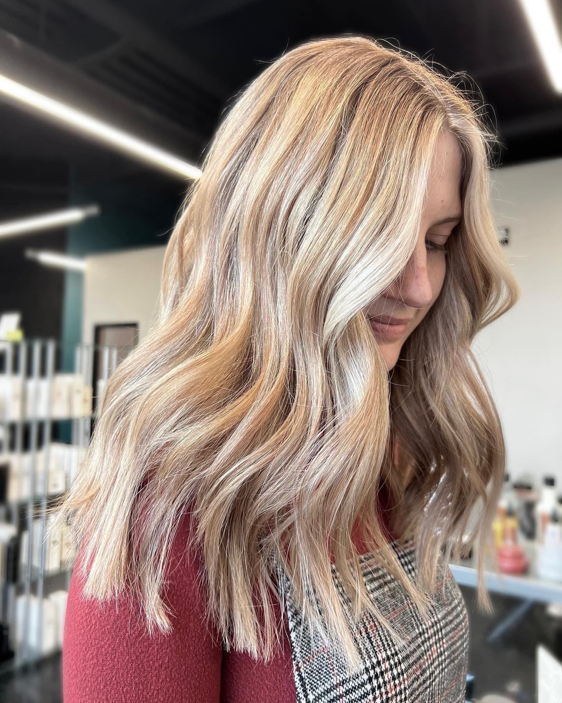
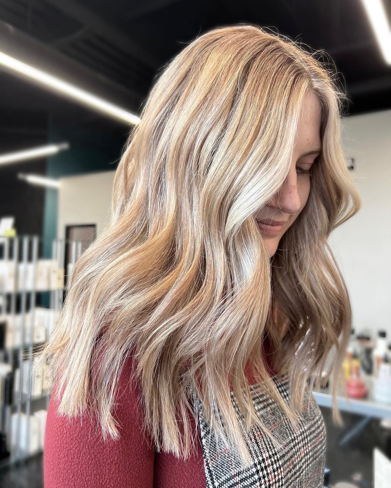
 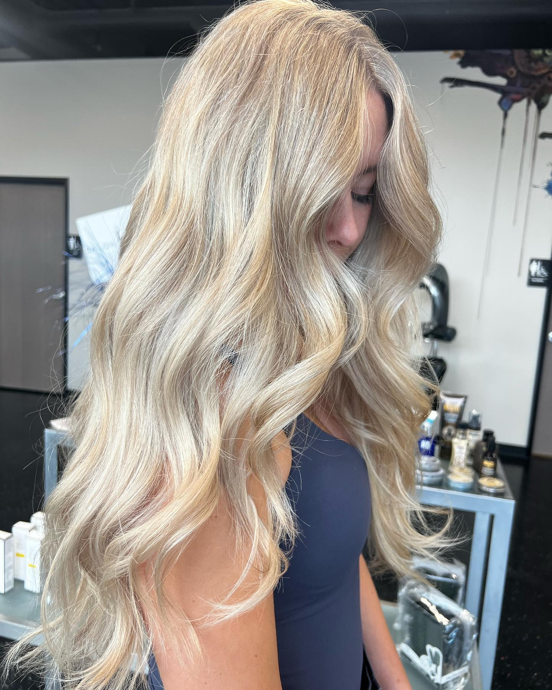
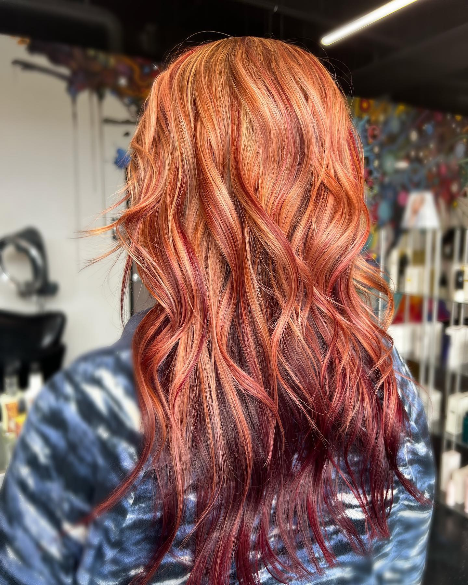
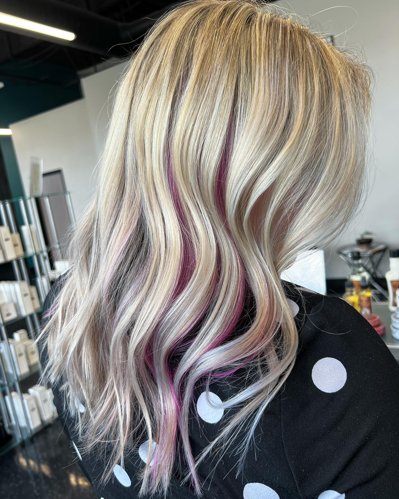
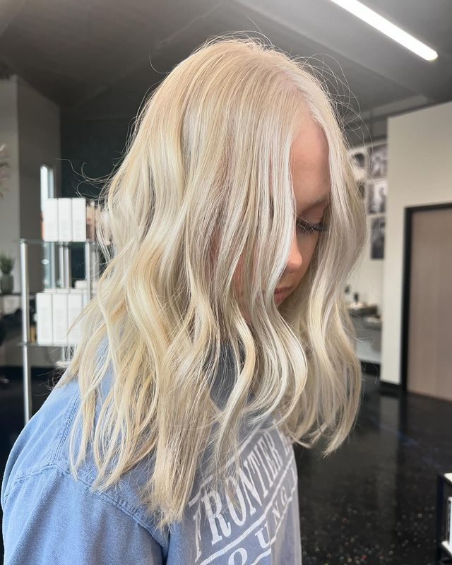
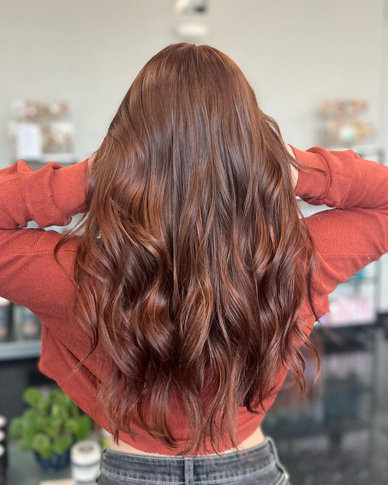
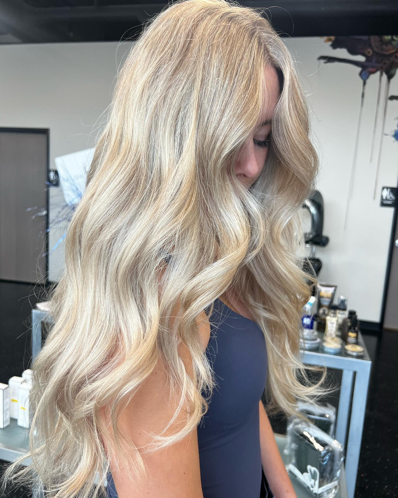
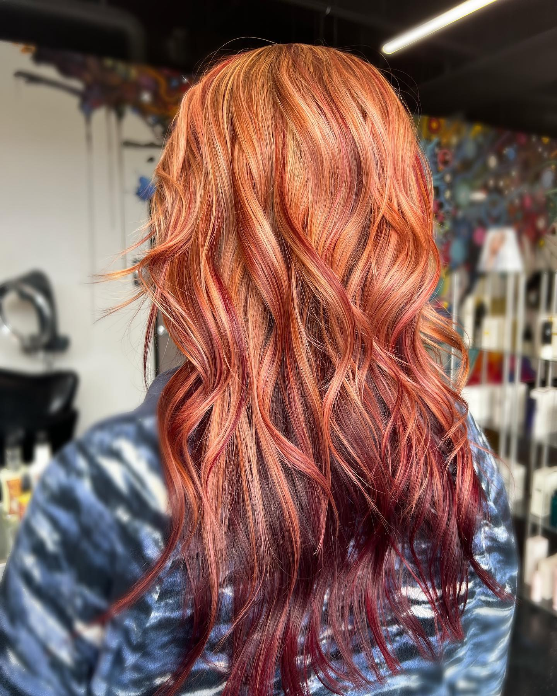
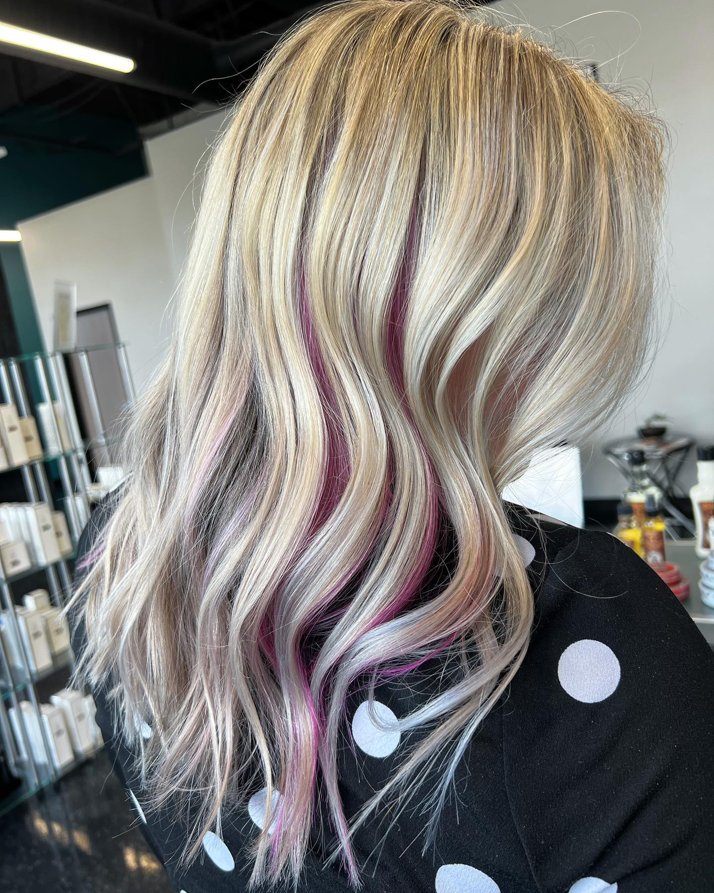
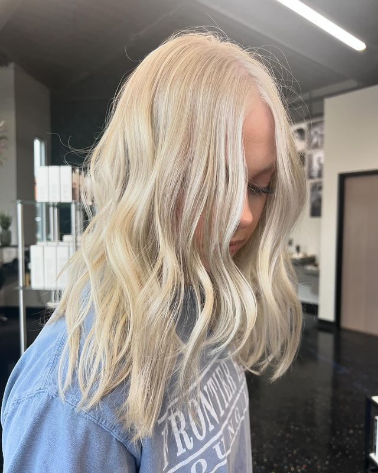
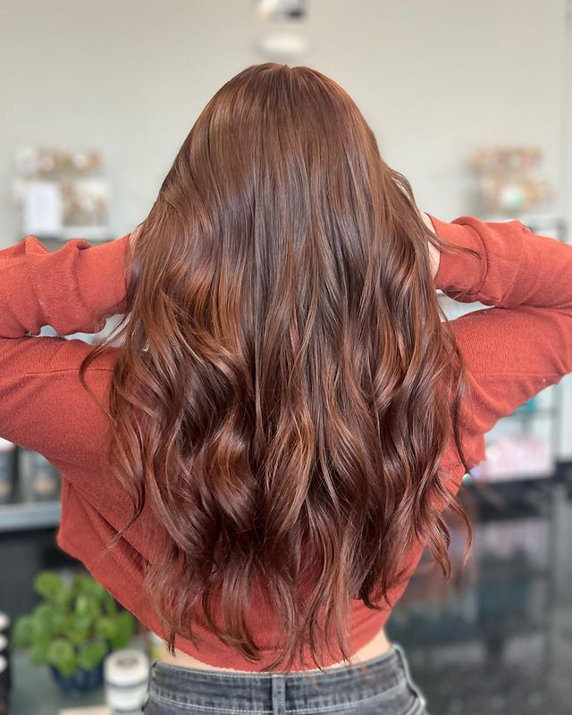